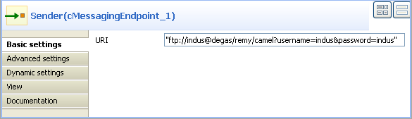

|
Component Family |
Messaging | ||||
|
Function |
cMessagingEndpoint allows two applications to communicate by either sending or receiving messages, one endpoint can not do both. | ||||
|
Purpose |
cMessagingEndpoint sends or receives messages. | ||||
|
Basic settings |
URI |
URI of the messages to send or receive. It can be of different format: -File: "file:/", -Database: "jdbc:/", -Protocols: "ftp:/", "http:/" -etc. You can add parameters to the URI using the generic URI syntax, for example:
For more information on the different components that can be used in cMessagingEndpoint, see Apache Camel’s Website: http://camel.apache.org/components.html. | |||
|
Advanced settings |
Dependencies |
By default, the camel core supports the following components: bean, browse, class, dataset, direct, file, language, log, mock, properties, ref, seda, timer, vm. To use other components, you have to provide the dependencies corresponding to those components in the cMessagingEndpoint component. To do so: Click the plus button to add new lines in the Camel component list. In the line added, select the component you want to use in cMessagingEndpoint. | |||
|
|
Use a custom component |
If you want to use a custom component, select this check box and click the three-dot button to upload a jar file with your own component.
| |||
|
Usage |
This component can be used as sending and/or receiving message endpoint according to its position in the Route. | ||||
|
Limitation |
n/a | ||||
![[Note]](../images/note.png)
This scenatio uses two cMessagingEndpoint components to read and move files from one endpoint to another.
From the Messaging folder of the Palette, drag and drop two cMessagingEndpoint components onto the design workspace, one as the message sender and the other as the message receiver, and label them Sender and Receiver respectively to better identify their roles in the Route.
Right-click the component labeled Sender, select Row > Route in the menu and drag to the Receiver to link them together with a route link.
Double-click the component labeled Sender to open its Basic settings view in the Component tab.
In the URI field, type in the URI of the messages you want to route.
As we are handling files, type in "file:///" and the path to the folder containing the files.

Double-click the component labeled Receiver to open its Basic settings view in the Component tab.
In the URI field, type in the URI of the folder where you want to route your message.
As we are handling files, type in "file:///" and the path to the folder to which the files will be sent.

Press Ctrl+S to save your Route.
To have a look at the generated code, click the Code tab at the bottom of the design workspace.

The code shows the
fromand.tocorresponding to the two endpoints:fromfor the sending one and.tofor the receiving one.In the Run view, click the Run button to launch the execution of your Route.
You can also press F6 to execute it.
RESULT: The files are moved from their original folder to the target one. Furthermore, a new .camel folder is created in the source folder containing the consumed files. This is Camel’s default behavior. Thus, the files will not be processed endlessly but they are backed up in case of problems.
This scenario accesses FTP service and transfers files from one endpoint to another.
From the Messaging folder of the Palette, drag and drop two cMessagingEndpoint components onto the design workspace, one as the message sender and the other as the message receiver, and label them Sender and Receiver respectively to better identify their roles in the Route.
Right-click the component labeled Sender, select Row > Route in the menu and drag to the Receiver to link them together with a route link.
Double-click the component labeled Sender to display its Basic settings view in the Component tab.
In the URI field, type in the URI of the message you want to route.
Here, we are using an FTP component:
ftp://indus@degas/remy/camelwith URI specific parameters authenticating the FTP connection:?username=indus&password=indus.For the FTP component to work in Camel, click the Advanced settings tab of cMessagingEndpoint, click the [+] button to add a Camel component in the Dependencies table, and select ftp from the Camel component list to activate the FTP component.

Double-click the component labeled Receiver to open its Basic settings view in the Component tab.
In the URI field, type in the URI of the folder to which you want your message to be routed.
As we are handling files, type in "file:///" and the path to the folder to which the files will be sent.
Press Ctrl+S to save your Route.
To have a look at the generated code, click the Code tab at the bottom of the design workspace.


In this part of code, we can see a route represented by
fromand.to, corresponding to the sending and receiving endpoints.In the Run view, click the Run button to launch the execution of your Route.
You can also press F6 to execute it.
RESULT: The message is sent (copied) to the receiving endpoint.